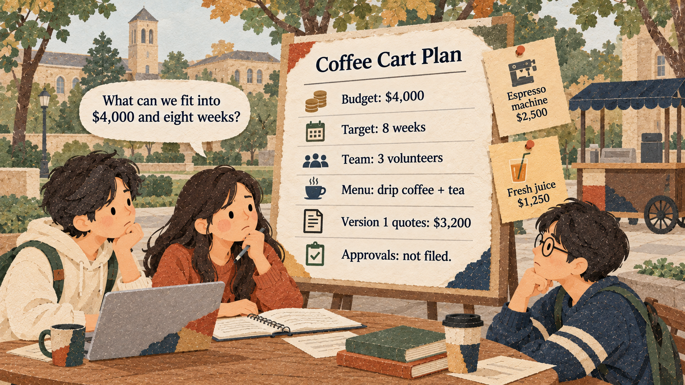

Root problem
The plan keeps growing
- A student club wants to open a coffee cart on campus.
- Limits: $4,000, 8 weeks, 3 volunteers.
- Every meeting, members add new ideas.

Root problem: the coffee cart plan keeps growing.
Use AI to set a project boundary, then test every new idea against it.
Fictional data created for this class. File: data/session_2_3_coffee_cart_costs.csv
These eight items are the first version of the coffee cart.
| Item | Cost |
|---|---|
| Used coffee cart | $1,200.00 |
| Two drip coffee brewers | $300.00 |
| Hot water dispenser | $250.00 |
| Cups, lids, and sleeves (first month) | $400.00 |
| Coffee beans and tea (first month) | $600.00 |
| Signs and menu board | $150.00 |
| Campus food permit fee | $200.00 |
| Card reader | $100.00 |
| Total | $3,200.00 |
These are not in version 1. Each one must be tested against the boundary.
| Item | Cost | Category |
|---|---|---|
| Espresso machine | $2,500.00 | Idea (not in version 1) |
| Juice blender | $350.00 | Change request: fresh juice |
| Small refrigerator | $600.00 | Change request: fresh juice |
| Fruit (first month) | $300.00 | Change request: fresh juice |
| Cocoa powder (first month) | $120.00 | Change request: hot chocolate |
Before you ask an AI to plan a project, know what these words mean.
The work included in this version of the project.
The budget is the most money the project can spend. The buffer is the money left after the planned costs.
$4,000 - $3,200 = $800 buffer
Each example uses the coffee cart.
A checkable result by a certain week.
Week 2: permit application submitted
You can answer yes or no.
Something the team needs from another person or office.
The cart cannot open until the campus approves the space.
To be determined: a fact the team still needs to confirm.
TBD means "find out," not "guess."
Compare the AI plan with the project facts.
| AI plan said | Project facts | Problem |
|---|---|---|
| Buy an espresso machine | Version 1 menu is drip coffee and tea | Out of scope, +$2,500.00 |
| Open in week 4 | Target is week 8; approval time is unknown | Invented date |
| "Campus approval: week 1" | Applications are not filed yet | Unknown shown as fact |
$3,200 + $2,500 = $5,700
$5,700 - $4,000 = $1,700 over
The instructor runs the prompts below and compares the answers.
Same project facts. Compare what the prompt asks for.
We are a student club. Write a complete plan for opening a coffee cart on campus.
A long, professional plan with an espresso machine, a large menu, a marketing campaign, and an opening date in about four weeks.
Same project facts. Compare what the prompt asks for.
Our club will open a coffee cart in 8 weeks with $4,000. Include every idea our members suggested: espresso drinks, fresh juice, hot chocolate, and a mobile ordering app. Guarantee that we open on time.
A plan that keeps every idea, says the cart "will open in week 8," and gives no total cost.
Steps 1 and 2. Copy this prompt exactly.
Our student club plans a coffee cart on campus. Project facts: - Budget: $4,000 maximum. Target: open in 8 weeks. Team: 3 volunteers. - Version 1 menu: drip coffee and tea only. - Campus space approval and a food permit are required. The applications are not filed yet. The approval time is unknown. | Version 1 price quotes (USD): Used coffee cart 1,200; Two drip coffee brewers 300; Hot water dispenser 250; Cups, lids, and sleeves 400; Coffee beans and tea 600; Signs and menu board 150; Campus food permit fee 200; Card reader 100. Other ideas: Espresso machine 2,500; Fresh juice 1,250; Mobile ordering app (no quote). Make three lists: In scope (version 1), Out of scope (later), and TBD (to confirm). For In scope, make a table with item and cost, then give the total and the buffer (budget minus total). Do not invent prices or dates. Do not write the plan yet. |
Each part of the prompt matters.
Same project facts. Compare what the prompt asks for.
I checked your table. The version 1 total is $3,200, and the buffer is $800. Now write a one-page project outline with: - The launch outcome in one sentence - Included work and excluded work - Four milestones, each with a target week and a yes/no check - One dependency and one risk - The next action for this week Keep the $4,000 budget and the 8-week target visible. Mark every unknown date as TBD. Do not promise an approval date.
Guided practice. Follow the five steps in order.
Use this table to check the AI.
| List | Items |
|---|---|
| In scope (version 1) | Used coffee cart, two drip coffee brewers, hot water dispenser, cups and lids, coffee beans and tea, signs and menu board, campus food permit fee, card reader. Total $3,200.00; buffer $800.00 |
| Out of scope (later) | Espresso machine, fresh juice, mobile ordering app |
| TBD (to confirm) | Campus space approval date, food permit approval date, price of a mobile ordering app |
Two weeks before opening, members send new requests.
Continue with the same project facts and the same version 1 plan. A member asks: [the request]. The extra costs are: [items and prices]. Show the new total and compare it with the $4,000 budget. List what else must be checked (time, approvals, people). Mark unknowns TBD. Then recommend one option in one sentence: accept now, save for version 2, or replace an existing item.
In the chat from Exercise 1, copy and send this completed prompt.
Continue with the same project facts and the same version 1 plan. A member asks: "Can we add fresh juice to the menu?" The extra costs are: Juice blender $350, Small refrigerator $600, Fruit for the first month $300. Show the new total and compare it with the $4,000 budget. List what else must be checked (time, approvals, people). Mark unknowns TBD. Then recommend one option in one sentence: accept now, save for version 2, or replace an existing item.
$350 + $600 + $300 = $1,250
$3,200 + $1,250 = $4,450
A member asks: "Can we add hot chocolate? We only need cocoa powder for $120 a month."
$3,200 + $120 = $3,320
$4,000 - $3,320 = $680 buffer
Use Report_template.docx in Microsoft Word. Save it as FirstName_StudentID_W7_Keyword.docx and upload it to iLearn by 23:59 on class day.
Check your report before you hand it in.